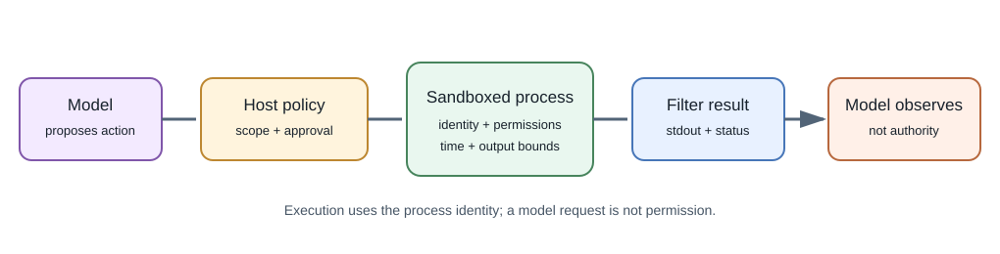
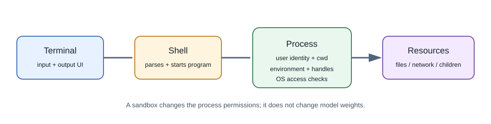

Terminal Tools and Operating-System Access in AI Applications¶
Introduction¶
Some AI products can request that a host run commands or operate on files. The language model does not inherently possess a terminal or direct operating-system access. A surrounding host, agent runtime, or tool executor receives the model's structured request and may execute an approved operation using the permissions of its process.


What a terminal and shell do¶
A terminal is an interface for text input and output. A shell such as PowerShell, Bash, or Zsh parses commands and starts programs. A command can inspect files, create or modify data, start processes, or access networks depending on the user's permissions and the execution environment.
An AI coding assistant may have separate tools for:
- reading or searching project files;
- applying a patch through an editor API;
- running a selected test or build command;
- calling a version-control or browser API;
- starting an approved shell command.
These are different capabilities. A file-editing tool can be narrower than an unrestricted shell. The host decides which tools exist and what approval is needed.
Safe, read-only command examples¶
Search source code without running it:
# Search for TODO markers in Markdown files.
rg -n "TODO" docs -g "*.md"
# List a focused directory.
Get-ChildItem .\docs\11-ai-and-machine-learning
# Inspect pending Git changes.
git status --short
In Bash, the equivalents commonly include rg -n "TODO" docs -g '*.md',
find docs -maxdepth 2 -type f, and git status --short. Prefer a
project-aware search tool such as rg for source searches. A broad command
like grep -R can traverse more directories than intended; specify the
target path and file filter.
How an AI command request should work¶
- The model emits a structured tool request, for example a command string or a named operation and arguments.
- The host checks whether that tool is enabled for this task and whether the request needs user confirmation.
- A policy layer checks working directory, permitted commands, arguments, network access, and time or output budgets.
- The operating system starts a process under an identity with specific filesystem, process, and network permissions.
- The host captures standard output, standard error, and exit status; it truncates or filters output before returning it to the model.
- The model can interpret the result, but the host must verify subsequent actions independently.
Process and operating-system boundaries¶
When a command runs, it normally inherits an execution context: user or service identity, current directory, environment variables, open handles, and a set of OS permissions. It can start child processes and may access files or services allowed to that identity. Containers and sandboxes add isolation boundaries, but their strength depends on configuration and host-kernel protections.
If a command can write to a project, it can alter source code. If it can access credentials, it may read them. If it can use the network, it may send or fetch data. If it can install packages, it can execute package scripts or load additional code. Treat these permissions as explicit capabilities, not as harmless defaults.
Risk tiers and approval¶
| Operation | Typical risk | Safer approach |
|---|---|---|
| List files or search selected source | Lower, usually read-only | Restrict paths and avoid secrets or generated directories |
| Run a known test or formatter | Moderate; code may execute | Use the project script, inspect the command, constrain time and scope |
| Edit or delete files | Changes persistent state | Show a diff, limit paths, require confirmation for broad changes |
| Install dependencies or execute downloaded code | Supply-chain and system changes | Review package and lockfile, isolate environment, ask before install |
| Access credentials or external services | Data and account impact | Use least privilege, secret redaction, explicit authorization |
| Run with administrator/root privileges | Broad OS-level impact | Avoid unless essential; require explicit informed approval and audit |
Do not treat a model's explanation as proof that a command is safe. Parse arguments, use allowlists where feasible, and prefer structured operations over concatenating user text into a shell command.
Safer process execution in application code¶
If an application must start a fixed local utility, pass an argument list instead of constructing a shell command from user input:
import subprocess
result = subprocess.run(
["rg", "-n", "TODO", "docs"],
cwd=".",
capture_output=True,
text=True,
timeout=5,
check=False,
)
print(result.returncode)
print(result.stdout[:2000])
This example runs a fixed search. Argument arrays reduce shell interpretation risk but are not a complete sandbox: validate paths, restrict permissions, set output and time limits, and do not pass untrusted values as unrestricted options.
How this differs from MCP¶
MCP is a protocol for connecting an AI host to a server that exposes capabilities such as tools or resources. A server may itself call a terminal or operating-system API, but the protocol does not grant that permission automatically. The server process still has OS-level permissions, and the host still needs to decide which capabilities users may approve. See MCP and Agent Integrations.
Developer perspective¶
For an AI coding assistant, allow only the project directories and tasks needed. Separate read, write, network, and process-execution permissions; require review before destructive or external effects; keep credentials out of command output; and show exactly what was run and what files changed.